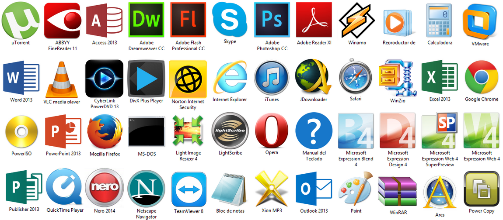

Servizi

Pulizia interna delle attrezzature e Soluzione alle alte temperature
Rimozione e Pulizia di virus e spyware
Aggiornamento di Notebook e Computer
Riparazione e Reinstallazione di Windows

Installazione di Programmi
Configurazione del router e della rete

Armato di Computer